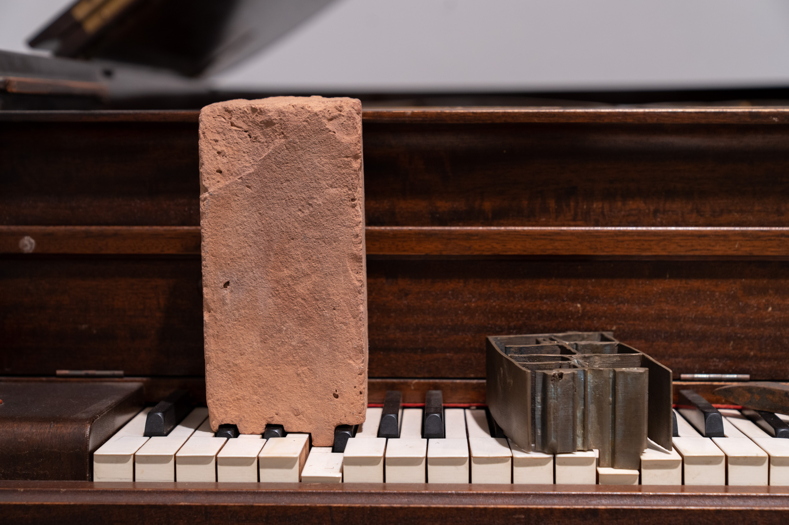
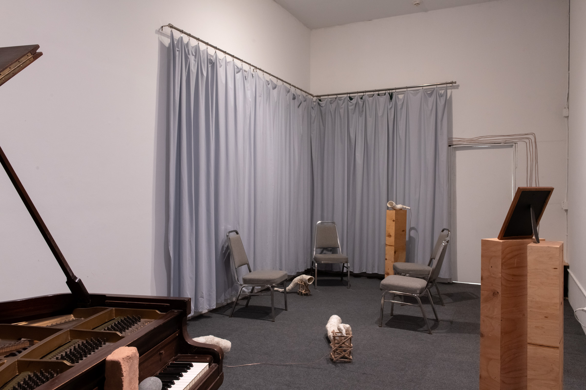
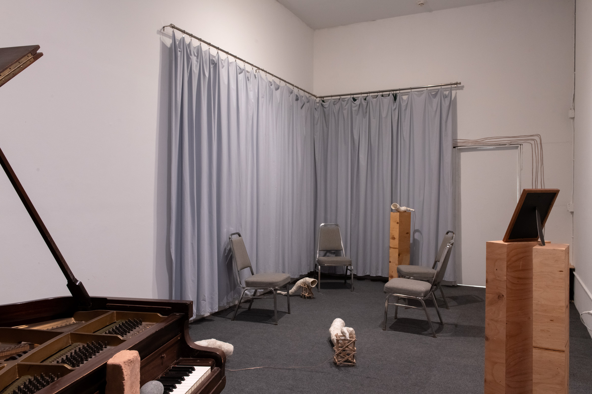
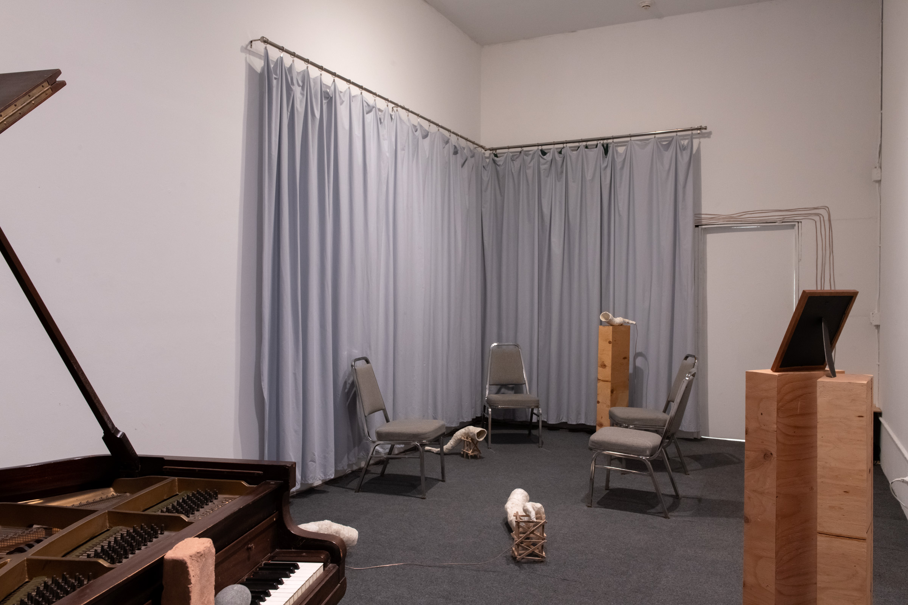

"I recognize the mountains."

Audio documentation of installation (excerpt)
"I recognize the mountains." is on the one hand a version of the sh'ma and on the other hand an impressionistic portrait of two voices marked by the twentieth century. It queries the possibilities and limits of transmission, taking place within an envelope of possibility opened up through the passing of time, physical distance, and intergenerational encounter.
Video documentation of installation

 



